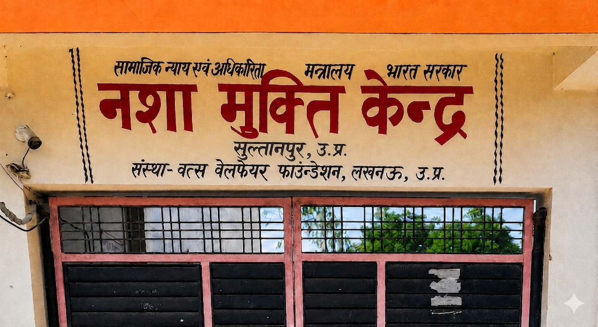

नशा छोड़ें🔹स्वस्थ जीवन अपनाएँ🔹 आशाजनक भविष्य चुनें🔹आत्मविश्वास के साथ नया जीवन बनाएं
हम नशा मुक्ति, परामर्श, चिकित्सीय सहायता, पुनर्वास, आर्थिक मार्गदर्शन, योग, ध्यान, सामाजिक समर्थन और परिवार काउंसलिंग प्रदान करते हैं ताकि व्यक्ति आत्मसम्मान, पारिवारिक मेलजोल, सकारात्मक जीवनशैली, शिक्षा, रोजगार और उज्जवल भविष्य के साथ अपने जीवन को पुनर्गठित कर सकें तथा शारीरिक, मानसिक, भावनात्मक और आत्मिक रूप से स्वस्थ, सशक्त, प्रेरित एवं समाज में सम्मानित तरीके से सफल आगे बढ़ सकें।
{kind=link}
करुणापूर्ण देखभाल सहानुभूतिपूर्ण सेवा, मानवीय सहायता, संवेदनशील सहयोग, आत्मीय समर्थन, सुरक्षित पुनर्वास वातावरण।
सुरक्षित और संरक्षित सुरक्षित परिसर, गोपनीयता, अनुशासन, संरक्षित वातावरण, भरोसेमंद सेवा, सुरक्षित पुनर्वास।
मार्गदर्शित सुधार पथ व्यक्तिगत देखभाल, काउंसलिंग, चिकित्सीय सहायता, योग, ध्यान, व्यवहार सुधार, परिवार काउंसलिंग।
बेहतर कल आशा, संतुष्टि, और एक नया जीवन की ओर अग्रसर होना, समर्पण और विश्वास के साथ।
Why Choose Vats Welfare Foundation?
Vats Welfare Foundation एक व्यवस्थित, भरोसेमंद और मानवीय दृष्टिकोण वाला नशा मुक्ति एवं पुनर्वास केंद्र है, जहाँ हर व्यक्ति को सम्मान, गोपनीयता और निरंतर मार्गदर्शन के साथ सुधार की राह दिखाई जाती है।
- व्यक्तिगत जरूरतों के अनुसार देखभाल
- काउंसलिंग, योग, ध्यान और व्यवहार सुधार
- स्वच्छ, अनुशासित और सुरक्षित परिसर
- परिवार को भी सुधार प्रक्रिया से जोड़ने पर ध्यान

“Recovery begins with trust, care and one positive decision.”